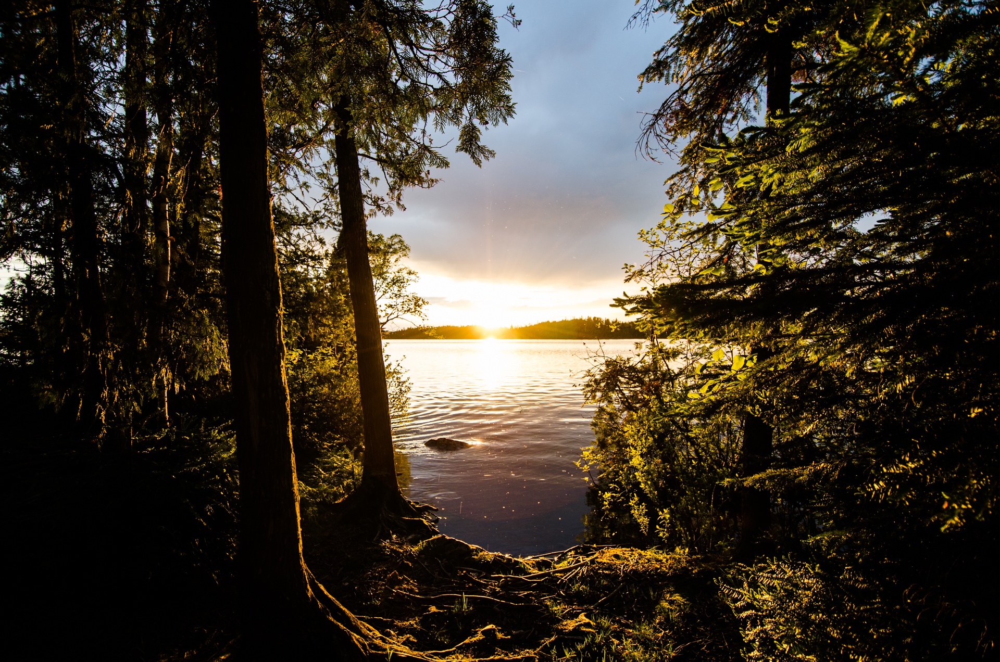
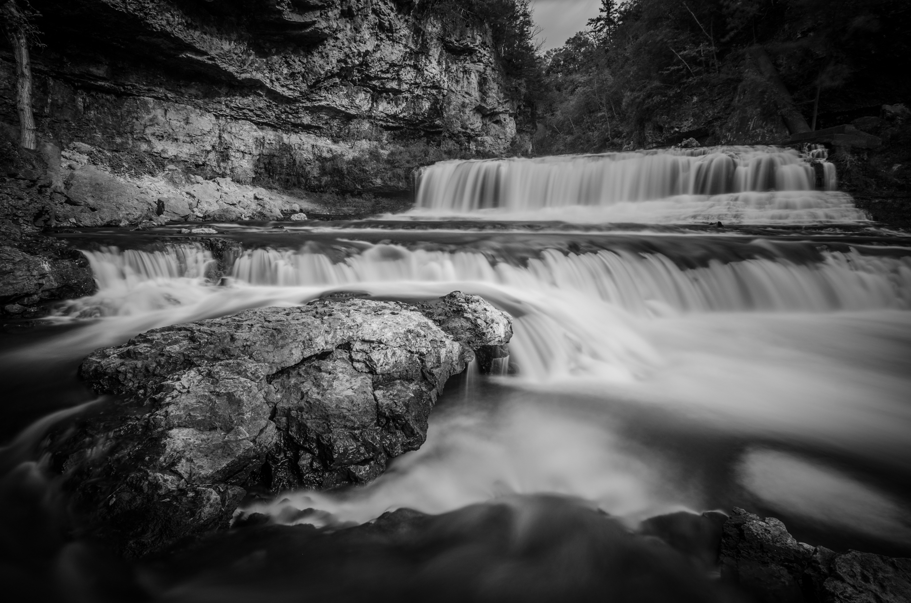
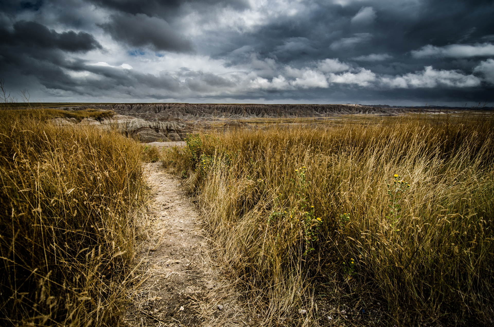
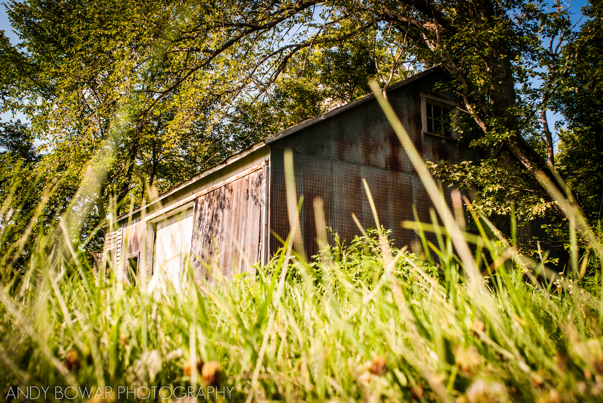

Photography:
My photography began in the summer of 2012 as a single-minded mission: to capture God's glory through the beauty of His creation. Living close to the country at the time, it struck me that many people see the country as boring, flat farmland as far as the eye can see. But our world is filled with amazing things to see, each and every bit of which was crafted by Him. Even in the ordinary, God's love shines. I realized that there are many things that people drive past every day and begin to take for granted. I wanted to work to find these things and capture them in a way that would draw the beauty out of them. Below are three of my most cherished photos.
| Photo | Artist's Statement | Date and Location | Settings |
|---|---|---|---|
![Minnehaha Falls in Spring: I've always felt that waterfalls are a great example of God's creation constantly at work. They flow constantly, changing the landscape ever more through the course of time. This photo takes the sense of the age of the waterfall and juxtaposes with the ever-changing nature of light. Water sees its work come to fruition over many thousands of years, but light can change in the blink of an eye. And yet, they were both created on the very first day of creation. In creation, we find a sense of poetry. This is what I tried to capture.](graphic/JRK_3383-2.jpg) |
I've always felt that waterfalls are a great example of God's creation constantly at work. They flow constantly, changing the landscape ever more through the course of time. This photo takes the sense of the age of the waterfall and juxtaposes with the ever-changing nature of light. Water sees its work come to fruition over many thousands of years, but light can change in the blink of an eye. And yet, they were both created on the very first day of creation. In creation, we find a sense of poetry. This is what I tried to capture. | May 2014, Minnehaha Falls | Nikon D7000, 22mm, 25 sec., f/11, ISO 100 |
|  | The main themes of this photo are shadows and illumination. The shadows, rolling back from the trees and the roots on the ground call to mind what it might have looked like when God said, "Let there be light". Now, every morning, as the sun rises, we see the leaves illuminated in a special and beautiful way as we welcome the source of light that Our Lord so graciously provides. And every evening, we see the leaves illuminated again as we say farewell in anticipation of a new dawn. | June 2014, Brule Lake, BWCA | Nikon D7000, 12mm, 1/100 sec., f/4, ISO 100 |
|  | "God is my rock." - a phrase that is often used to illustrate our reliance and foundation in Him. "The river of God" - a phrase often used to illustrate the abundant fruits the Holy Spirit provides us with. These phrases are often used because the best way to illustrate Our Father's goodness is to reference His creation. The rock lives in the river, water rushing past it. We, as His beloved, stand on the rock and experience the waters of the Spirit, flowing through us. | September 2014, Willow River, WI | Nikon D7000, 13mm, 20 sec., f/9, ISO 100 |
|  | This photo evokes feelings of turmoil, angst, and confusion. The tumultuous sky is analogous to feelings we experience when something entirely new and unexplored is set before us. So often, we see the path before us and, though clear, appears to have the potential for turmoil and angst. It is at these times we must remember Jesus’s words when he speaks of faith in the face of difficulties (Matt. 6:24-34). Upon hearing these words, it becomes clear - the path must be tread, despite the difficulties, in order to grow in hope, love, and faith in the truth of Christ. | August 2014 | Nikon D7000, 12mm, 1/1600 sec., f/4, ISO 100 |
|  | “Do not lay up for yourselves treasures here on earth, where moth and rust consume...For where your treasure is, there will your heart be also.” The barn rusts as its owner takes Jesus’ words to heart. He decides to store his treasures in heaven. In doing so, his heart is moved. Now, we see the new grass and trees overtake his old treasure. In this photo, we see also the sunlight as it permeates the leaves of the tree, as though a sign of the way Jesus’ words permeate the man’s heart and soul, just as they permeate our own. | July 2012 | Nikon D60, 24mm, 1/320, f/8, ISO 400 |